《星球大战》和《星际迷航》系列小说应该从哪里看起？
看到
同学在认真地推书，我深受启发。我决定我也简单介绍一些我认为比较精彩的星战小说。
首先要说明，星战衍生宇宙的精彩故事不是只在小说里，星战漫画和游戏的故事同样经典。而且，在绝大多数时候，星战小说、漫画和游戏三者是联动的，比如旧共和国时代的著名人物瑞文（Revan）——单机游戏首次引入这个人物；漫画介绍这个人物名字和装束的由来；小说介绍这个人物的背景和后续故事；网络游戏讲述这个人物的死亡（当然，目前只能说疑似死亡）。不过，题主既然主要问小说，那么我就主要介绍小说，必要的时候会提一下相关漫画和游戏。
1、《索龙三部曲》（The Thrawn Trilogy）
 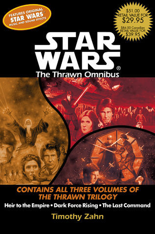
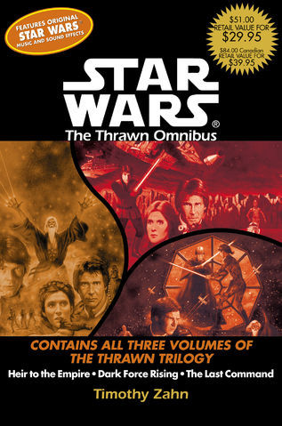我在上周就介绍过，《索龙三部曲》在世界科幻界都享有盛誉。在《索龙三部曲》之前，星战衍生宇宙小说只有三套（共7本），讲的故事要么跟电影毫无关系，要么就是格局小、人物少的支线任务。而《索龙三部曲》真正延续了星战电影的剧情，讲述了皇帝和维德死后，银河帝国如何在索龙元帅的领导下向新共和国（义军同盟改组后的政权）反扑，但戏剧性失败的故事。以《索龙三部曲》为开端，星战衍生宇宙小说进入了空前的大发展时期；几乎所有把背景设置在《绝地归来》之后的星战小说都以《索龙三部曲》为基础；星战迷们耳熟能详的《绝地归来》之后的衍生宇宙人物，比如索龙元帅、吉拉德·佩雷恩、玛拉·杰德、杰森·索洛、杰娜·索洛等等，几乎都源自《索龙三部曲》。
尽管后世模仿者众多，但就我本人的读后感受而言，我认为《索龙三部曲》有一个迄今没有被超越的特质，那就是——《索龙三部曲》是最能体现星战正传三部曲电影风格的衍生宇宙作品，没有之一。一方面，《索龙三部曲》讲述了一个完全不同于正传三部曲电影的故事。另一方面，它在故事结构、人物对白、桥段设置、场景切换、细节点缀等方面，无不让读者脑中浮现正传三部曲电影的相关情节。而且，这样的致敬并不让人感到生硬，而是倍感亲切。可以说，作者蒂莫西·扎恩在创作《索龙三部曲》时，真正吃透了乔治·卢卡斯拍摄正传三部曲时的思想，并加以发扬光大，将其完美融入自己的作品。相比之下，其它星战衍生宇宙作品要么是电影的拙劣模仿者，要么摆脱电影的风格，走了一条新路。
是否有配套漫画：有，而且漫画版已汉化。
阅读前需要看什么作品：正传三部曲电影即可。
是否有简体中文版：有，预计在今年或明年上市。
2、《兰多·卡瑞辛历险记》（The Lando Calrissian Adventures）
 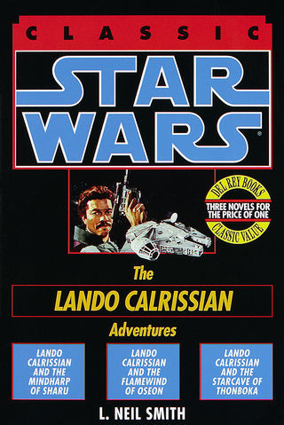
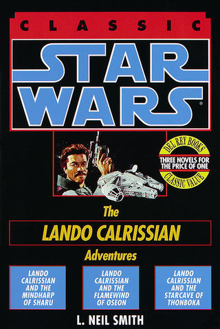《兰多·卡瑞辛历险记》就是我上面提到的最早的三套星战衍生宇宙小说之一。这套小说本身也是一个三部曲，讲述了兰多·卡瑞辛与机器人武菲·拉（Vuffi Raa）的三段冒险。这套小说有三大特点：
1、语言风趣、情节幽默，在紧张刺激的冒险过程中总能让人捧腹大笑；
2、与电影几乎毫无关系，因此没看过星战电影的人直接读这套小说都没有问题。小说甚至故意避免使用电影里的词汇，比如，用“海军”（Navy）代替帝国；用“魔法”（Magic）代替原力；用“士兵”（Trooper）代替冲锋队等等。
3、带有经典科幻作品的风格，第一本小说探索失落的古文明，第二本小说经历炫目的天文奇观，第三本小说接触不可思议的外星生物。
有关这套小说的详细书评见：
倒霉的幸运船长。
是否有配套漫画：无。
阅读前需要看什么作品：不需要。
是否有简体中文版：无。
3、《向莱娅公主求婚》（The Courtship of Princess Leia）
 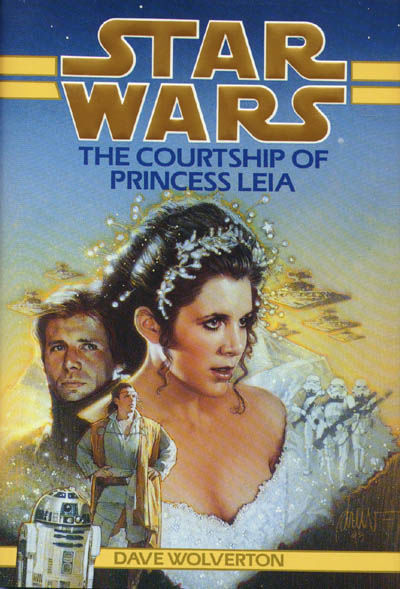
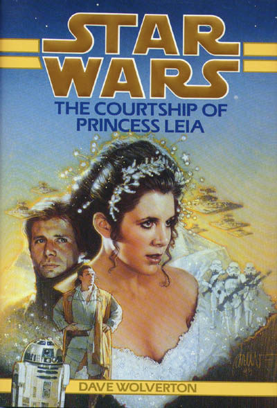《向莱娅公主求婚》是我本人最喜欢的星战小说之一。顾名思义，它讲述了汉·索洛和莱娅公主结婚前的一段冒险经历。这本小说有两大特点：
1、剧情曲折离奇，让人欲罢不能，总想一直读下去，看书中人如何处理这一个又一个难题。
2、对爱情的描写十分细腻，可以认为是几百本星战小说中对爱情刻画得最真实感人的。同样是包含爱情元素的星战作品，电影《克隆人的进攻》比《向莱娅公主求婚》低了不知道多少个档次。
这是一本很重要的星战小说，从某种程度上，甚至比《索龙三部曲》还重要。它为星战宇宙贡献了两个元素：海皮斯人（Hapan）和达索米尔暗夜姐妹。前者后来发展为衍生宇宙里最重要的政治势力之一，几乎所有《绝地归来》之后的的衍生宇宙作品都会提到她们（注意我用了“她”，因为海皮斯人是一个母权制文明），她们直接与天行者-索洛家族联姻，在银河系一手遮天。达索米尔暗夜姐妹更不用说了，直接进入正史，成为TCW里最抢眼的组织，文崔斯、达斯·摩尔统统跟她们有关。
是否有配套漫画：无。
阅读前需要看什么作品：正传三部曲电影即可。
是否有简体中文版：无。
4、《X翼》（X-Wing）系列小说
 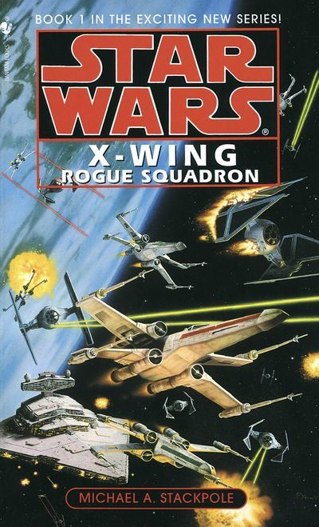
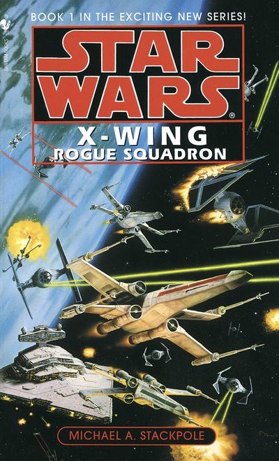《X翼》系列小说总共有十本，上图只是其中第一本的封面。这套小说以
韦奇·安蒂列斯（Wedge Antilles）为主角，讲述了新共和国（包括后来的银河同盟）一群热血飞行员兼特工保家卫国，消灭帝国残余势力的故事。
跟以往的星战小说不同，《X翼》系列不再聚焦于帝王将相、绝地西斯等银河系的“大人物”，而是讲述小人物的故事。在这套小说里，每位飞行员都是一个活生生的人。他们有自己的爱恨情仇。他们的亲情、友情、爱情让人感受到银河系几十年的动荡对所有人都带来了巨大的影响。通过对一场场激烈战斗、一次次生离死别和一段段战斗间隙的描写，这套小说把每个人物的性格和身世刻画得栩栩如生。
这套小说由迈克尔·A·斯塔克波尔（Michael A. Stackpole）和已故的阿龙·奥尔斯顿（Aaron Allston）联合创作。两位作家的风格略有差异。斯塔克波尔的文字铿锵有力，犹如战斗檄文，爱国主义情怀和对自由的热爱跃然纸上；奥尔斯顿是冷幽默高手，细节设置得十分巧妙，几乎每一页都能戳中星战迷的笑点。
在这十本小说中，我最喜欢的是第九本《X-Wing: Starfighters of Adumar》。它是一个相对独立的故事，与其它九本关系不大。这是一本向《三个火枪手》致敬的作品，因此文字相当讲究，华丽而不艰涩，风趣而不粗俗。读完以后令人拍案叫绝，大呼过瘾。
这套小说在国外星战迷中间评价极高，不亚于《索龙三部曲》。而且，一直有国外星战迷呼吁把这套小说改编为科幻美剧。因为它的总体格局确实很有很多美剧的特点：主要角色以固定的团队为单位与外部世界互动，每个角色都有不为人知的过去，这些过去可能会对其他人产生影响，团队不同成员间也有不同的情谊和关系。
是否有配套漫画：有，而且漫画是小说的前传，部分汉化。
阅读前需要看什么作品：正传三部曲电影即可。
是否有简体中文版：无，其中有一本有繁体中文版，但翻译得不好。
5、《新绝地武士团》（The New Jedi Order）系列小说
 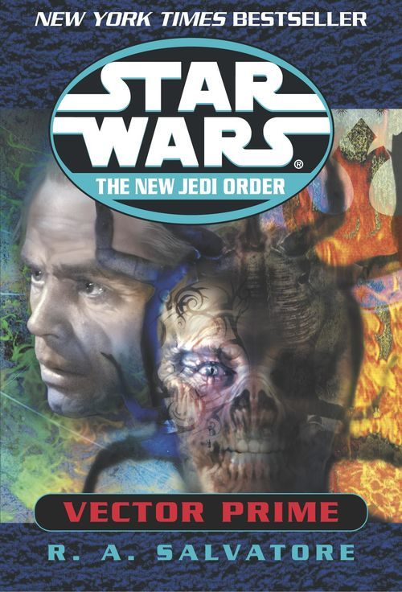
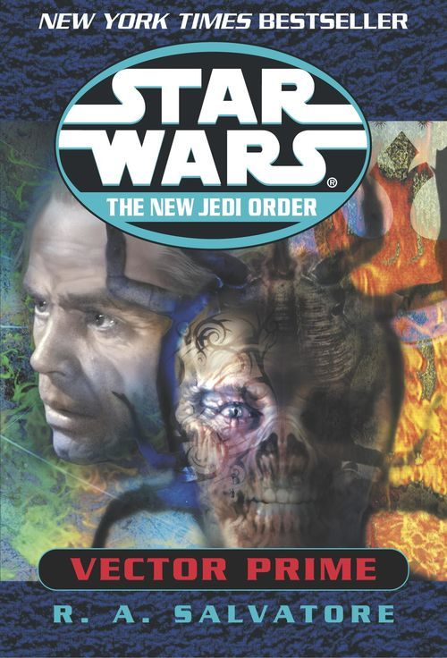上图是《新绝地武士团》第一册的封面。《新绝地武士团》系列创造了星战小说两个“之最”，至今没有被打破：
1、包含册数最多的系列，共有19本长篇小说、3本中篇小说和3篇短篇小说；
2、篇幅最长的单本星战小说，即《The New Jedi Order: Star by Star》，厚达624页！
《新绝地武士团》翻开了星战宇宙最黑暗的一页：河外文明
遇战疯人（Yuuzhan Vong）入侵银河系，掀起惨烈的遇战疯人战争。这场战争虽然以遇战疯人的失败而告终，但导致银河首都科洛桑面目全非，银河同盟被迫临时迁都，已知空间的累积死亡人数达365万亿，一百多个星系被彻底摧毁。
《新绝地武士团》是卢卡斯影业第一次尝试在公司的指导下，让多位作家集体协商创作一套庞大的星战衍生宇宙系列作品。单独地来看，《新绝地武士团》系列是质量非常高的太空军事科幻作品，远非过往的衍生宇宙作品所能比。其设定自洽合理，情节精彩曲折，人物栩栩如生，让读者第一次切身体会到星战世界的宏大与深邃。但是，由于作品本身的背景和风格过于黑暗，因此它在庞大的星战传奇中显得有些违和（星战世界还没发生过如此大规模和残酷的外星人入侵事件）。这导致《新绝地武士团》成为争议最大的星战作品之一。
我本人为这套小说写了详细的剧情介绍：
遇战疯人战争简史。
是否有配套漫画：无。
阅读前需要看什么作品：最好把《索龙三部曲》和《X翼》系列小说看一看。
是否有简体中文版：部分中篇小说和短篇小说有汉化。
6、《原力传承》（Legacy of the Force）系列小说
 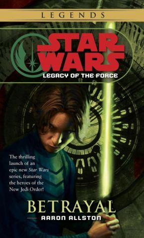
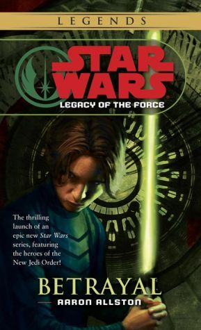《原力传承》系列小说总共有九本，上图只是其中第一本的封面。《原力传承》讲述了第二次银河内战与
杰森·索洛（Jacen Solo）堕落为西斯尊主达斯·凯杜斯的故事。
这套小说是卢卡斯影业尝试将前传三部曲电影的风格融入《绝地归来》后的衍生宇宙的一次努力。应该说，这次努力还是相当成功的。第二次银河内战几乎就是克隆人战争和银河内战的结合与重演。杰森的悲剧也很像阿纳金·天行者的命运。
我本人为这套小说写了详细的剧情介绍：
第二次银河内战简史。
是否有配套漫画：无。
阅读前需要看什么作品：最好把《新绝地武士团》系列小说看一看。
是否有简体中文版：无。
7、《绝地的命运》（Fate of the Jedi）系列小说
 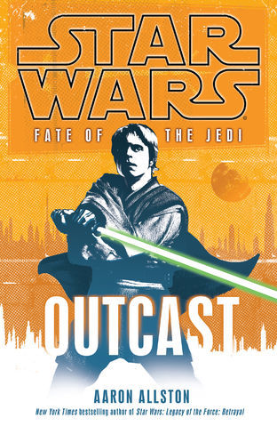
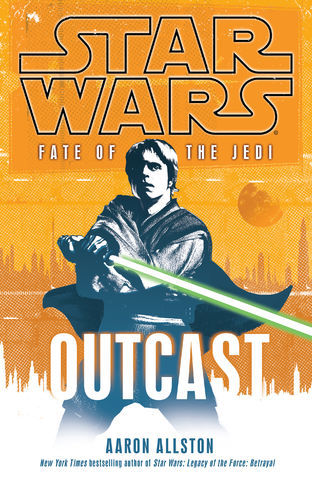《绝地的命运》系列小说总共有九本，上图只是其中第一本的封面。《绝地的命运》原创了两个新的反派——西斯的失落部落和上古原力使用者阿贝洛思（Abeloth）。小说的主线就是讲银河同盟和新绝地武士团如何打败他们的故事。这个系列在最后将主线直接与正史动画片《克隆人战争》衔接，让人耳目一新。这个系列有两大特点：
1、最初的几本类似《星际迷航》，偏重于对银河系神秘文明的探索；
2、跟其它星战作品在政治上的复古风不同，这个系列在政治上显得很“现代”，比如利益集团控制下的媒体造假、政客通过引导社会舆论达到自己的目的、示威游行引起的政权更迭（颜色革命？）、法庭内外控辩双方律师的斗智斗勇等。
我本人为这套小说写了剧情简介：
阿贝洛思败退前后银河系局势概述。
是否有配套漫画：无。
阅读前需要看什么作品：最好把《原力传承》系列小说看一看。
是否有简体中文版：无。
8、《西斯的失落部落：故事合集》（Lost Tribe of the Sith: The Collected Stories）
 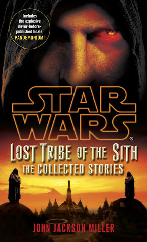
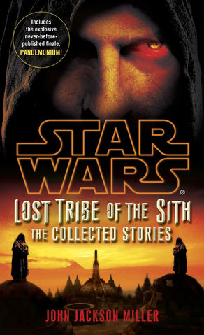提到了《基地》三部曲，其实，在星战小说界，也有一本《基地》风格的小说，那就是《西斯的失落部落：故事合集》。这本小说本身是《绝地的命运》的衍生，讲述了西斯的失落部落在几千年前的起源。这本小说最大的特色就是仿照《基地》三部曲的写法，用一系列离散的小故事和一条单一的线索讲述一个文明几百年的发展史。
是否有配套漫画：有，而且漫画是小说的续集。
阅读前需要看什么作品：最好把《绝地传奇》（Tales of the Jedi）系列漫画和《绝地的命运》系列小说看一看。
是否有简体中文版：无。
最后，我以《西斯的失落部落：故事合集》为例，介绍一下星战衍生宇宙作品的错综复杂：
1、《西斯的失落部落：故事合集》是《绝地的命运》的外传；
2、《西斯的失落部落：故事合集》第一个故事讲到主角的飞船与另一艘飞船相撞，这被撞的另一艘飞船引申出了小说
《横流》（Crosscurrent）与
《激流》（Riptide）。
3、《横流》与《激流》的主角源自游戏《绝地学院》（Jedi Academy）。
4、上面提到的飞船相撞事故发生在超空间大战（Great Hyperspace War）时期，超空间大战记载在漫画《绝地传奇》里。
5、漫画《Lost Tribe of the Sith: Spiral》是《西斯的失落部落：故事合集》的续集，也是一个离散的小故事。
6、《Lost Tribe of the Sith: Spiral》里的反派来自漫画《旧共和国武士》（Knights of the Old Republic）。
7、漫画《旧共和国武士》是游戏《旧共和国武士》的前传。
看了上面的介绍，我相信题主会意识到，想按顺序完整阅读星战小说几乎是不可能的~~
----------------------------------2015年3月8日-------------------------------------
我就说星球大战吧。
1，应该从哪个系列或者哪几本书看起？
答：这是
《星球大战》作品概述，你可以先把其中列出的“正史”小说看掉。不多，就那么几本。然后可以读“传说”作品里的《索龙三部曲》（Thrawn Trilogy）——它虽然不是第一套星战衍生小说，却为日后庞大的星战衍生小说打下了基础，所以我们一般都推荐星战新人从《索龙三部曲》开始读。而且这套书今年应该会有简体中文版出版，由我们
星球大战中文网审定。
2，有没有完整的阅读顺序图？
答：没有，不过这里有一份
按作品内时间线编排的所有星战小说列表，你可以以此为参考。
3，书籍有没有包括影视作品本身的主线剧情，还是全部都是前传外传后传射门的。
答：当然有电影小说版。不过主要都是电影的前传、外传和后传，毕竟把电影故事用文字复述一遍意义不大。同样，电影小说版简体中文版今年应该会再版，由我们
星球大战中文网审定。
4，这些书里，名气最大成就最高的有哪些？
答：还是《索龙三部曲》，它
入选NPR最受欢迎的100套科幻/奇幻小说，名列第88位，是唯一入选的星战小说。除了《索龙三部曲》，我个人比较喜欢的其它小说包括《向莱娅公主求婚》（The Courtship of Princess Leia）、《X翼》（X-Wing）系列小说（共十本）、《新绝地武士团》（New Jedi Order）系列小说（共十九本）、原力传承（Legacy of the Force）系列小说（共九本）和《绝地的命运》（Fate of the Jedi）系列小说（共九本）。